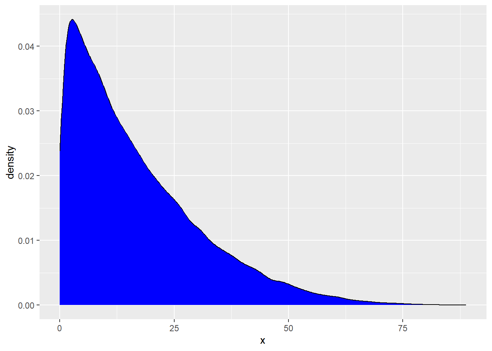
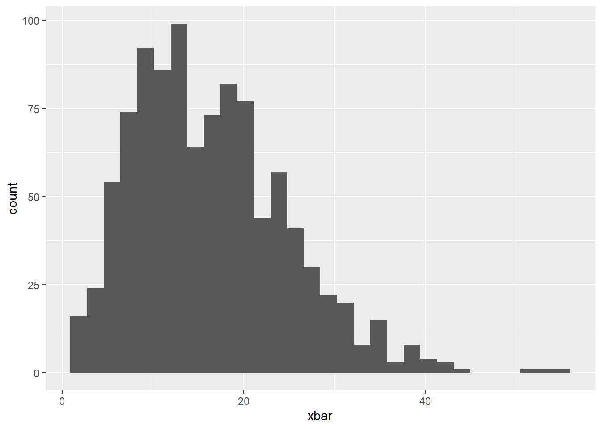

Bootstrap + CLT Confidence
Suggested Answers
Central Limit Theorem
To start this activity, we are going to demonstrate what the CLT is all about.
Below, we are going to generate a population distribution. This is not observed in real life. We are simply pretending we know this for demonstration purposes.
rs_pop <- tibble(x = rbeta(100000, 1, 5) * 100)
rs_pop |>
ggplot(
aes(x = x)) +
geom_density(fill = "blue") 
We are now going to draw samples from this population distribution, take the mean and repeat this process!
Below, draw one sample.
# A tibble: 1 × 1
x_bar
<dbl>
1 13.9To make a distribution of sample means…. we need to do this process over and over and over again. Let’s do this below.
Now, create a histogram of the sample means below. Is the distribution of sample means normal?
The distribution of the means in ~ Normal!
sampling |>
ggplot(
aes(x = xbar)
) +
geom_histogram()`stat_bin()` using `bins = 30`. Pick better value with `binwidth`.We know that the mean of our sampling distribution should be about the same as the mean of our population distribution. Check this below:
# A tibble: 1 × 1
m
<dbl>
1 16.6# A tibble: 1 × 1
m
<dbl>
1 16.6Takeaway And we can use this to create confidence intervals for our population parameter of interest (much like we can with bootstrap methods)
Small Sample Size
Now, let’s change our sample size to 3, violating as assumption of the CLT, and see how it impacts our sampling distribution.
Again, create a histogram of the sample means and comment on the shape of the distribution below.
sampling |>
ggplot(
aes(x = xbar)
) +
geom_histogram()`stat_bin()` using `bins = 30`. Pick better value with `binwidth`.
Skewed Right
Load Data: Pokemon
We will be using the pokemon data set, which contains information about 42 randomly selected Pokemon (from all generations). Pokemon is a Japanese media franchise managed by The Pokémon Company, founded by Nintendo, Game Freak, and Creatures. Within this franchise, there are over 1000 different pokemon characters. In this activity, we are going to be taking estimating the mean height of them all.
\(\mu\) = True mean height of all pokemon
You may load in the data set with the following code:
pokemon <- read_csv("https://sta101.github.io/static/appex/data/pokemon.csv")Rows: 42 Columns: 15
── Column specification ────────────────────────────────────────────────────────
Delimiter: ","
chr (4): name, leg_status, type_1, type_2
dbl (11): pokedex_number, generation, height_m, weight_kg, bst, hp, atk, def...
ℹ Use `spec()` to retrieve the full column specification for this data.
ℹ Specify the column types or set `show_col_types = FALSE` to quiet this message.In this analysis, we will use CLT-based inference to draw conclusions about the mean height among all Pokemon species.
EDA
Let’s start by looking at the distribution of height_m, the typical height in meters for a Pokemon species, using a visualization and summary statistics.
pokemon |>
ggplot(
aes(x = height_m)
) +
geom_histogram(binwidth = .15)Below, calculate the mean, standard deviation, and sample size
# A tibble: 1 × 3
mean_height sd_height n_pokemon
<dbl> <dbl> <int>
1 0.929 0.497 42- What is the point estimate for \(\sigma\)?
s = 0.497
What is the standard deviation mean?
Add response
- What is the point estimate for \(\mu\), i.e., the “best guess” for the mean height of all Pokemon? Use proper notation.
\(\bar{x}\) = 0.929
Bootstrap Distribution
Below, we are going to create a bootstrap distribution using simulation techniques. How is this distribution created?
Assumptions
- Independence?
That one pokemon’s height does not impact the other
- Sample size?
n > 10
Create
boot_df <- pokemon |>
specify(response = height_m) |>
generate(reps = 1000, type = "bootstrap") |>
calculate(stat = "mean")Resample with replacment “n” number of times. Calculate the new sample mean. Do this process 1000 times to create your bootstrap resample distribution.
Visualize this distribution below:
boot_df |>
ggplot(
aes(x = stat)
) +
geom_histogram()`stat_bin()` using `bins = 30`. Pick better value with `binwidth`.# A tibble: 1 × 1
center
<dbl>
1 0.930Now, let’s use this distribution to create a 95% confidence interval…
# A tibble: 1 × 2
lower upper
<dbl> <dbl>
1 0.783 1.08What changes if we were to create a 90% confidence interval?
Becomes more narrow
Interpret your 95% confidence interval in the context of the problem below:
We are 95% confident that the true mean height of all pokemon is between 0.783 and 1.08 meters.
CLT
Now, we will be using the Central Limit Theorem to draw conclusions about the \(\mu\), the mean height in the population of Pokemon.
CLT Conditions
Before moving forward, let’s check the conditions required to apply the Central Limit Theorem. Are the following conditions met:
- Independence?
That one pokemon’s height does not impact the other
- Sample size?
42 > 30
Central limit theorem
Remember, when the independence and sample size assumptions are met, the central limit theorem states
\[ \bar{x} \sim N(\mu, \sigma / \sqrt{n}) \]
We estimate \(\mu\) with x-bar. When we also need to estimate \(\sigma\) (which we do in this case when working with a quantitative variable), we no longer can use a normal distribution. We need to use a t-distribution
Why the t-dist
We don’t know the true population mean \(\mu\) and standard deviation \(\sigma\), how do we use CLT to construct a confidence interval? t-distribution!
We approximate \(\mu\) by \(\bar{x}\) and \(\sigma\) with \(s\). However \(s\) may be smaller than \(\sigma\) and our confidence interval could be too narrow, for example, run the code below to compute the standard deviation of three draws from a standard normal.
[1] 0.5449586# Compare this value to 1. Are some higher? Lower?Run this code a few times to repeat the simulation; you will find that \(s\) is sometimes above and sometimes below the true standard deviation we have set of 1.
To account for this uncertainty, we will use a distribution with thicker tails. This sampling distribution is called a t-distribution.
ggplot(data = data.frame(x = c(0 - 1*3, 0 + 1*3)), aes(x = x)) +
stat_function(fun = dnorm, args = list(mean = 0, sd = 1),
color = "black") +
stat_function(fun = dt, args = list(df = 3),
color = "red",lty = 2) + theme_bw() +
labs(title = "Black solid line = normal, Red dotted line = t-distribution")The t-distribution has a bell shape but the extra thick tails help us correct for the variability introduced by using \(s\) instead of \(\sigma\).
Unlike the normal distribution…. there are many many many different t-distributions. We can distinguish the differences by their degrees of freedom. The degrees of freedom describes the precise form of the bell-shaped t-distribution. In general, we’ll use a t-distribution with \(df=n−1\) to model the sample mean when the sample size is \(n\).
\[ \bar{x} \pm t^*_{n-1} \times \frac{s}{\sqrt{n}} \]
We can use qt and pt to find quantiles and probabilities respectively under the t-distribution.
Calculation
- Calculate the 95% confidence interval for pokemon height using the t-distribution.
(0.774, 1.083)